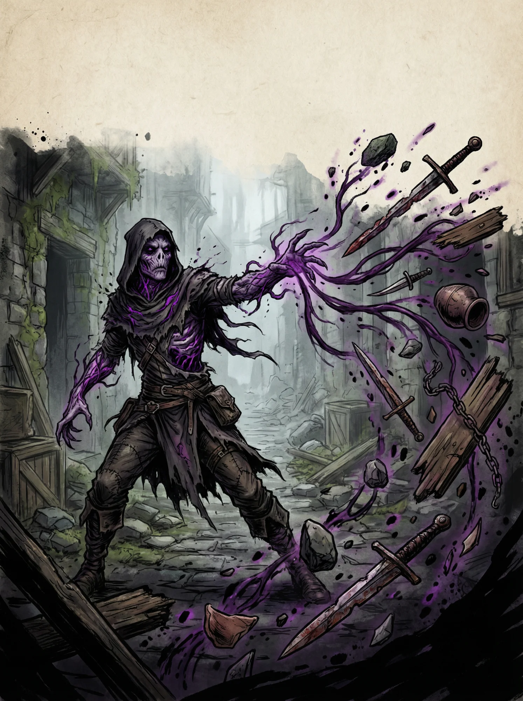

{{raca.nome}}
Marcados pelo éter. A corrupção não é doença — é transformação.
Eles carregam fragmentos do plano místico em seus corpos. Veias que brilham sutilmente, olhos que refletem cores impossíveis, sussurros constantes no limite da audição. São temidos por muitos, estudados por Teurgos, e caçados por alguns.
Atributos
{{raca.atributos.texto}}
Alternativo
{{raca.alternativo.texto}}
Movimento
{{raca.movimento.texto}}
Idiomas
{{raca.idiomas.texto}}
Vida: {{raca.vida}}
Altura: {{raca.altura}}
Peso: {{raca.peso}}
Perícias de Raça
{{raca.pericias.itens.0.texto}}
Características de Raça
{{CARD_0}} {{CARD_1}} {{CARD_2}} {{CARD_3}}Relações Sociais
Os corrompidos são universalmente vistos com desconfiança. Alguns corrompidos abraçam sua natureza, buscando mais poder. Outros lutam contra ela, tentando permanecer humanos. Muitos simplesmente tentam sobreviver em um mundo que não os quer.
{{raca.corrupcao.titulo}}
{{raca.corrupcao.intro}}
| Nível | Máximo de Corrupção |
|---|---|
| {{raca.corrupcao.maximoPorNivel.0.nivel}} | {{raca.corrupcao.maximoPorNivel.0.maximo}} |
| {{raca.corrupcao.maximoPorNivel.1.nivel}} | {{raca.corrupcao.maximoPorNivel.1.maximo}} |
| {{raca.corrupcao.maximoPorNivel.2.nivel}} | {{raca.corrupcao.maximoPorNivel.2.maximo}} |
| {{raca.corrupcao.maximoPorNivel.3.nivel}} | {{raca.corrupcao.maximoPorNivel.3.maximo}} |
| {{raca.corrupcao.maximoPorNivel.4.nivel}} | {{raca.corrupcao.maximoPorNivel.4.maximo}} |
{{raca.corrupcao.poderes.titulo}}
| Corrupção | Efeito | Custo |
|---|---|---|
| {{raca.corrupcao.poderes.itens.0.nome}} | {{raca.corrupcao.poderes.itens.0.efeito}} | {{raca.corrupcao.poderes.itens.0.custo}} |
| {{raca.corrupcao.poderes.itens.1.nome}} | {{raca.corrupcao.poderes.itens.1.efeito}} | {{raca.corrupcao.poderes.itens.1.custo}} |
| {{raca.corrupcao.poderes.itens.2.nome}} | {{raca.corrupcao.poderes.itens.2.efeito}} | {{raca.corrupcao.poderes.itens.2.custo}} |
| {{raca.corrupcao.poderes.itens.3.nome}} | {{raca.corrupcao.poderes.itens.3.efeito}} | {{raca.corrupcao.poderes.itens.3.custo}} |
| {{raca.corrupcao.poderes.itens.4.nome}} | {{raca.corrupcao.poderes.itens.4.efeito}} | {{raca.corrupcao.poderes.itens.4.custo}} |
| {{raca.corrupcao.poderes.itens.5.nome}} | {{raca.corrupcao.poderes.itens.5.efeito}} | {{raca.corrupcao.poderes.itens.5.custo}} |
| {{raca.corrupcao.poderes.itens.6.nome}} | {{raca.corrupcao.poderes.itens.6.efeito}} | {{raca.corrupcao.poderes.itens.6.custo}} |
| {{raca.corrupcao.poderes.itens.7.nome}} | {{raca.corrupcao.poderes.itens.7.efeito}} | {{raca.corrupcao.poderes.itens.7.custo}} |
| {{raca.corrupcao.poderes.itens.8.nome}} | {{raca.corrupcao.poderes.itens.8.efeito}} | {{raca.corrupcao.poderes.itens.8.custo}} |
| {{raca.corrupcao.poderes.itens.9.nome}} | {{raca.corrupcao.poderes.itens.9.efeito}} | {{raca.corrupcao.poderes.itens.9.custo}} |
| {{raca.corrupcao.poderes.itens.10.nome}} | {{raca.corrupcao.poderes.itens.10.efeito}} | {{raca.corrupcao.poderes.itens.10.custo}} |
| {{raca.corrupcao.poderes.itens.11.nome}} | {{raca.corrupcao.poderes.itens.11.efeito}} | {{raca.corrupcao.poderes.itens.11.custo}} |
| {{raca.corrupcao.poderes.itens.12.nome}} | {{raca.corrupcao.poderes.itens.12.efeito}} | {{raca.corrupcao.poderes.itens.12.custo}} |
| {{raca.corrupcao.poderes.itens.13.nome}} | {{raca.corrupcao.poderes.itens.13.efeito}} | {{raca.corrupcao.poderes.itens.13.custo}} |
| {{raca.corrupcao.poderes.itens.14.nome}} | {{raca.corrupcao.poderes.itens.14.efeito}} | {{raca.corrupcao.poderes.itens.14.custo}} |
{{raca.corrupcao.adversidades.titulo}}
| Adversidade | Efeito | Custo |
|---|---|---|
| {{raca.corrupcao.adversidades.itens.0.nome}} | {{raca.corrupcao.adversidades.itens.0.efeito}} | {{raca.corrupcao.adversidades.itens.0.custo}} |
| {{raca.corrupcao.adversidades.itens.1.nome}} | {{raca.corrupcao.adversidades.itens.1.efeito}} | {{raca.corrupcao.adversidades.itens.1.custo}} |
| {{raca.corrupcao.adversidades.itens.2.nome}} | {{raca.corrupcao.adversidades.itens.2.efeito}} | {{raca.corrupcao.adversidades.itens.2.custo}} |
| {{raca.corrupcao.adversidades.itens.3.nome}} | {{raca.corrupcao.adversidades.itens.3.efeito}} | {{raca.corrupcao.adversidades.itens.3.custo}} |
| {{raca.corrupcao.adversidades.itens.4.nome}} | {{raca.corrupcao.adversidades.itens.4.efeito}} | {{raca.corrupcao.adversidades.itens.4.custo}} |
| {{raca.corrupcao.adversidades.itens.5.nome}} | {{raca.corrupcao.adversidades.itens.5.efeito}} | {{raca.corrupcao.adversidades.itens.5.custo}} |
| {{raca.corrupcao.adversidades.itens.6.nome}} | {{raca.corrupcao.adversidades.itens.6.efeito}} | {{raca.corrupcao.adversidades.itens.6.custo}} |
| {{raca.corrupcao.adversidades.itens.7.nome}} | {{raca.corrupcao.adversidades.itens.7.efeito}} | {{raca.corrupcao.adversidades.itens.7.custo}} |
| {{raca.corrupcao.adversidades.itens.8.nome}} | {{raca.corrupcao.adversidades.itens.8.efeito}} | {{raca.corrupcao.adversidades.itens.8.custo}} |
| {{raca.corrupcao.adversidades.itens.9.nome}} | {{raca.corrupcao.adversidades.itens.9.efeito}} | {{raca.corrupcao.adversidades.itens.9.custo}} |
| {{raca.corrupcao.adversidades.itens.10.nome}} | {{raca.corrupcao.adversidades.itens.10.efeito}} | {{raca.corrupcao.adversidades.itens.10.custo}} |
| {{raca.corrupcao.adversidades.itens.11.nome}} | {{raca.corrupcao.adversidades.itens.11.efeito}} | {{raca.corrupcao.adversidades.itens.11.custo}} |
| {{raca.corrupcao.adversidades.itens.12.nome}} | {{raca.corrupcao.adversidades.itens.12.efeito}} | {{raca.corrupcao.adversidades.itens.12.custo}} |
| {{raca.corrupcao.adversidades.itens.13.nome}} | {{raca.corrupcao.adversidades.itens.13.efeito}} | {{raca.corrupcao.adversidades.itens.13.custo}} |
| {{raca.corrupcao.adversidades.itens.14.nome}} | {{raca.corrupcao.adversidades.itens.14.efeito}} | {{raca.corrupcao.adversidades.itens.14.custo}} |